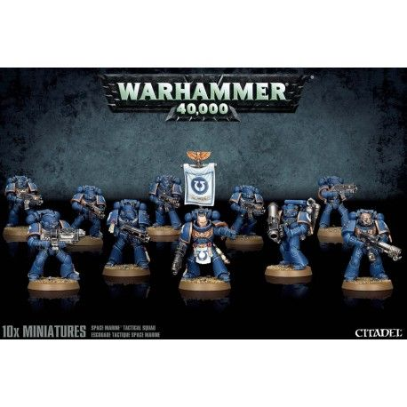

Catálogo de Productos
Juegos de Mesa (Wargames de Figuras)
Actualmente disponible en nuestros almacenes
Aquí mostramos el catálogo de figuras de plástico disponible en nuetra tienda
Space Marine Tactical Squad
Las Tactical Squads son la espina dorsal de todo ejército de Space Marines. Controlan terreno y proporcionan fuego de apoyo y se lanzan al cuerpo a cuerpo, según dicten las necesidades del momento.
Esta caja contiene todo lo necesario para montar una Tactical Squad totalmente personalizada de 10 miniaturas, incluyendo un Sergeant y un arma especial. La caja contiene tantas opciones y detalles que te recomendamos que emplees un rato en mirar las fotos que hay arriba para hacerte una idea de lo que puedes hacer.